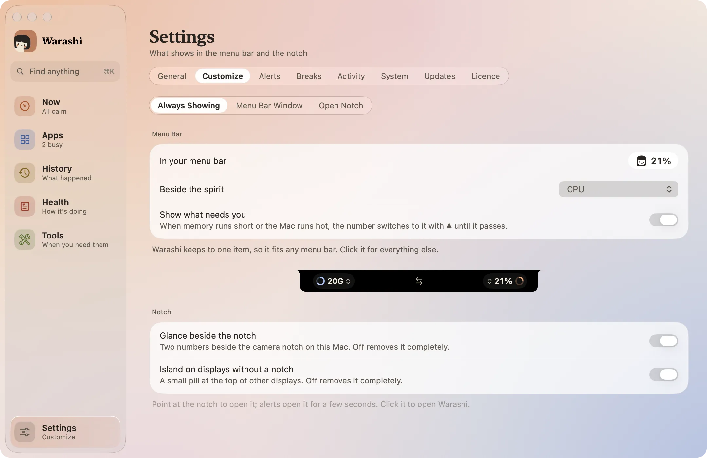
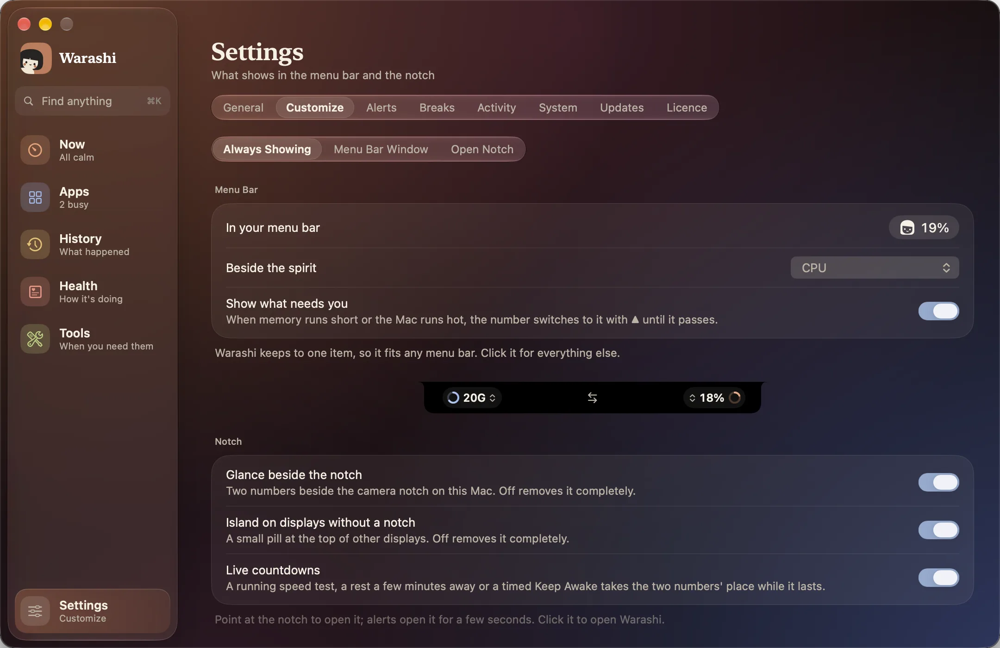
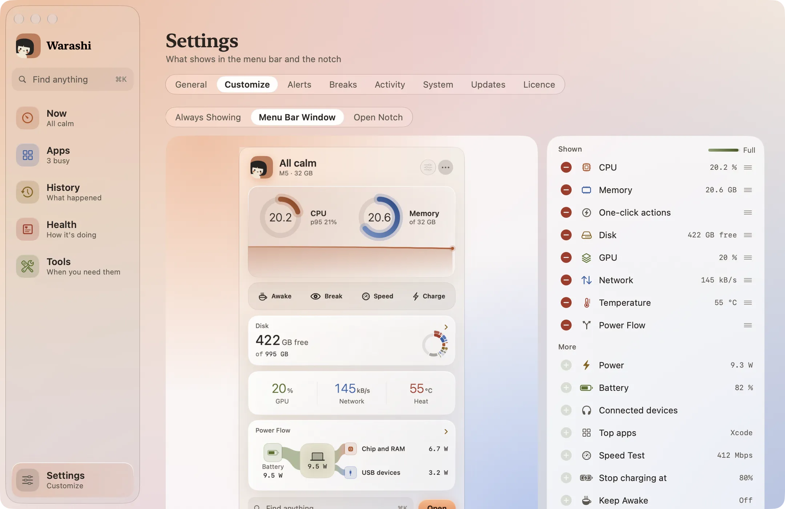
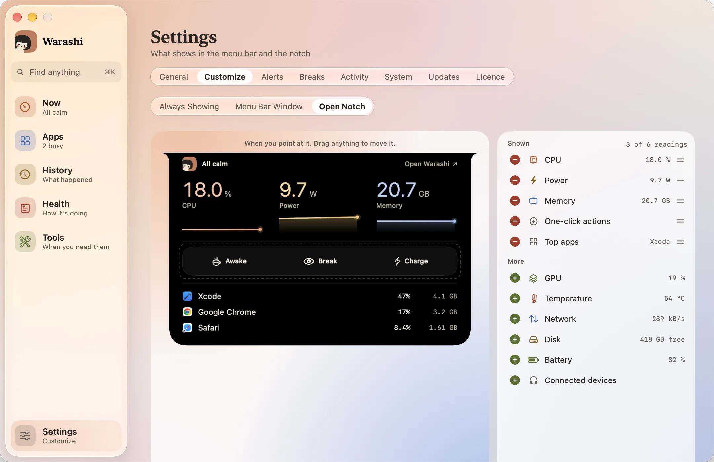
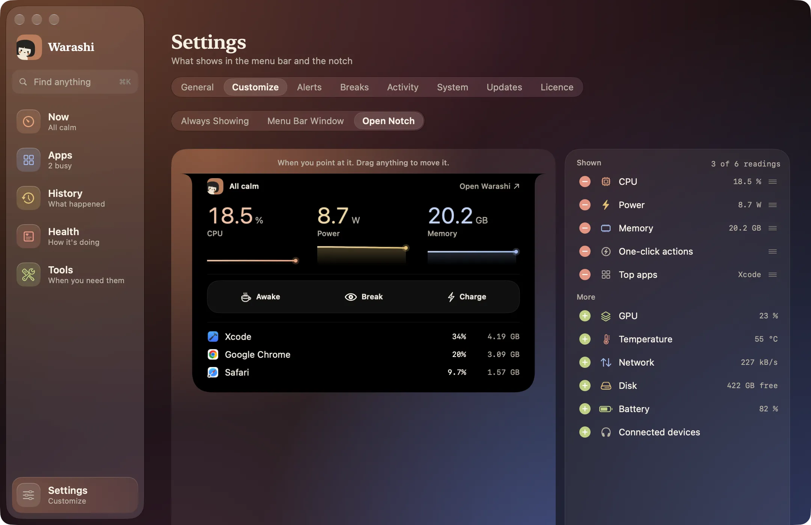

画面に常に表示するものは、すべてひとつの場所で設定します。設定 › カスタマイズで、3つのタブがあります。どのタブでも、選択肢の横に実物がライブで表示されます。変更はすぐに反映され、保存は不要です。
- 常に表示
画面に常に表示されるもの。わらしの横でメニューバーの数字を選ぶか、なし（わらしのみ）にします。対応が必要なことを表示をオンにすると、警告に切り替わるようになります。その下でノッチの左とノッチの右に置くものを選び（矢印で入れ替え）、ノッチの横の表示とアイランドのオン／オフを切り替えます。


- メニューバーのウインドウ
左側にはメニューバーウインドウそのものが表示されます。表示中で−を押すと項目を外し、その他で+を押すと追加します。プレビューの項目をつかんで好きな場所に置くと、ほかの項目がよけて場所を空けます。小さなメーターで、残りのスペースがわかります。


- 開いたノッチ
ポインタを合わせたときのノッチも同じです。最大6つの数値に加えて、上位アプリ、接続中のデバイス、ワンクリック操作を表示できます。リストには、6つのうちいくつ使っているかが表示されます。


- 最初からやり直す
リセットは、初期設定と異なる箇所があると表示され、すべて元に戻します。
ここへのショートカット
メニューバーウインドウ上部のスライダボタンを押すと「メニューバーのウインドウ」タブが、開いたノッチのスライダボタンを押すと「開いたノッチ」タブが開きます。
表示の並び方
メニューバーウインドウには決まった最大サイズがあり、スクロールしないので、いつも画面に収まります。いっぱいになると+が淡色表示になるので、先に何かを外してください。CPUとメモリはリングとして上部に並び、短い数値は1列に、残りは2つずつ組になって並びます。
開いたノッチでは数値が常に均等に並ぶので、1行にひとつだけ取り残されることはありません：
| 測定値 | 並び方 |
|---|---|
| 1、2、または3 | 1行 |
| 4 | 2つの2行 |
| 5 | 3つ、次に2つ |
| 6 | 3つの2行 |
うまくいかないときは
- 項目が選べない： バッテリー、電力フロー、充電の上限はバッテリーのあるMacでのみ、接続済みは何かが接続されているときだけ表示されます。電力フロー、スピードテスト、スリープさせない、休憩、充電の上限はメニューバーウインドウ用で、ノッチでは使えません。
詳しくはトラブルシューティングをご覧いただくか、adam@warashi.appまでメールでお問い合わせください。